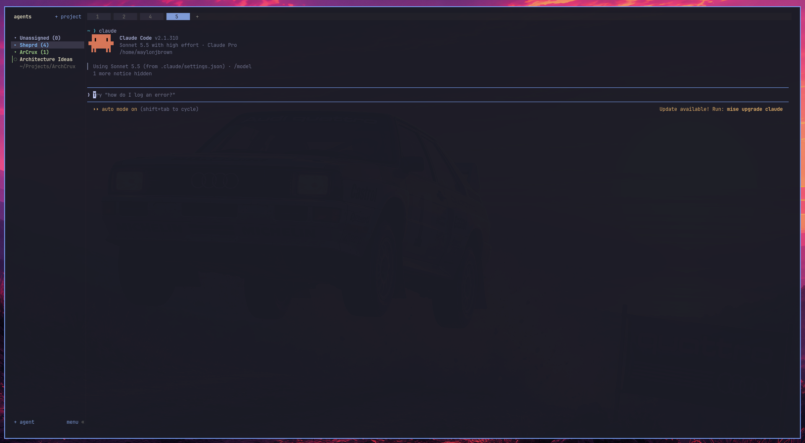

Projects, your way.
Color-coded groups for the work that belongs together. Projects organize your agents without tying them to a folder. New terminals start fresh, at home.
One terminal for your coding agents.
Organize agents by project, see which ones need input, and leave them running when you step away.
>_ Open source. One Rust binary. Your terminal.

Sheprd in use: projects and agents together in one terminal.
When you run more than one coding agent, the hard part shouldn’t be finding the one that’s waiting for you.
Color-coded groups for the work that belongs together. Projects organize your agents without tying them to a folder. New terminals start fresh, at home.
See working, blocked, and idle states at a glance. A question gets its own sound, distinct from a finished task. Give your attention where it counts.
Close the client or lose your SSH connection. Your terminals keep running in the background server. Come back, reattach, and pick up where you left off.
Click, drag, and split with the mouse. Jump between tabs with familiar shortcuts. Keep local work and saved SSH machines in the same view.
Find your flowInstall with one command on Linux, macOS, or Windows. Prefer to compile it yourself? Rust and Zig 0.16.0 get you a binary from source.
install.shinstall.ps1install.cmd
Explore the repository# Linux and macOS
curl -fsSL https://sheprd.xyz/install.sh | sh
sheprd# PowerShell
powershell -ExecutionPolicy Bypass -c "irm https://sheprd.xyz/install.ps1 | iex"
# Command Prompt, if endpoint security blocks the line above
curl.exe -fsSLo install.cmd https://sheprd.xyz/install.cmd && install.cmd && del install.cmd# Get the source
git clone https://github.com/WlnJBrn09/Sheprd
cd Sheprd
# Build, then start your session
cargo build --release --locked
./target/release/sheprdYou don’t have to be on a special list or wait for an invitation to contribute. Found a bug, have an idea, or want to improve the code or documentation? Head to GitHub and join in.
Contribute on GitHubSheprd is an independently branded, open-source fork of Herdr. It builds on the terminal runtime with a project-first sidebar, optional color-coded groups, familiar tab shortcuts, and distinct input alerts. Its configuration and state are separate from Herdr installations.
No. You run the agents you already use in real terminal panes. Sheprd organizes those terminals and tracks supported agents’ state. Your agents keep their own tools, configuration, and workflows.
While the Sheprd background server is running, closing or detaching the client leaves pane processes running. Start Sheprd again to reattach. A server or machine restart ends those processes; saved layouts can be restored, and supported agent integrations can resume conversations.
The Unix, Windows PowerShell, and Command Prompt installers live on this site: install.sh, install.ps1, and install.cmd. They install the latest published release when binaries are available. Until then, use the source tab above. Check GitHub releases for packages.